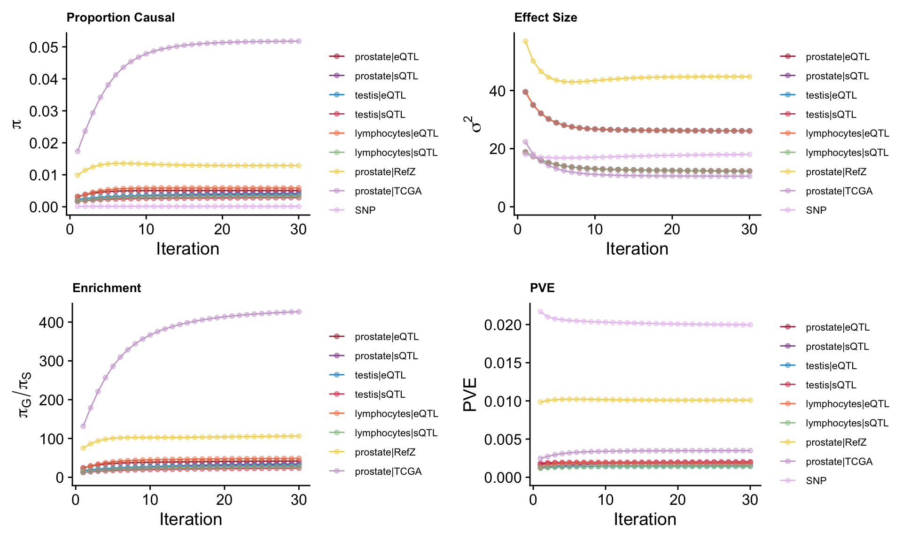
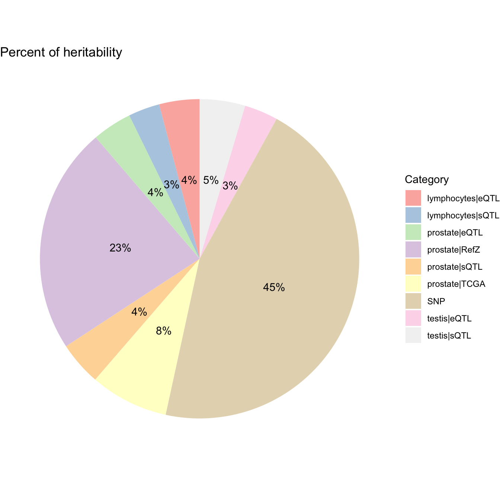
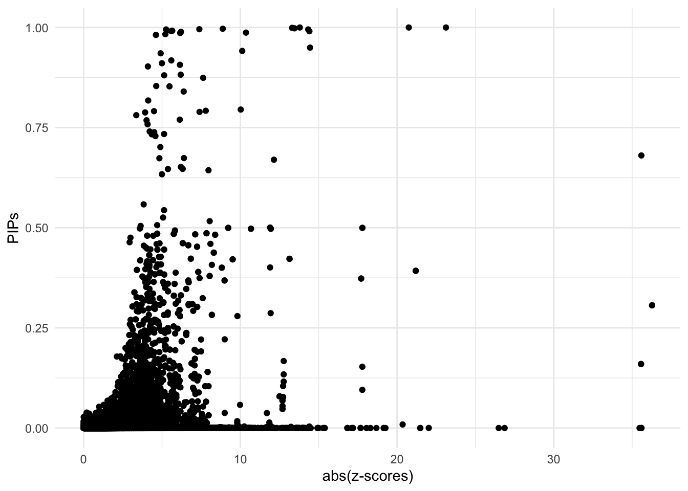
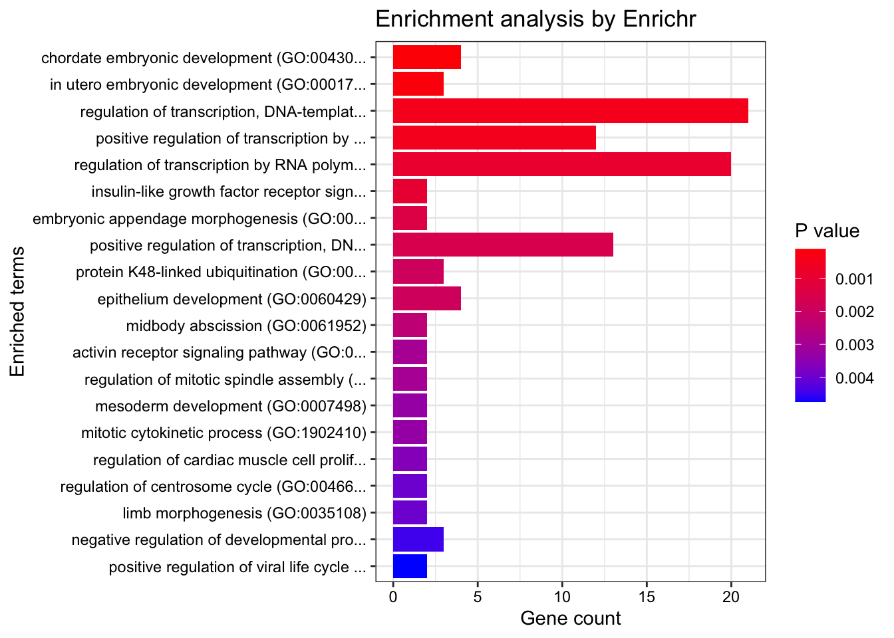
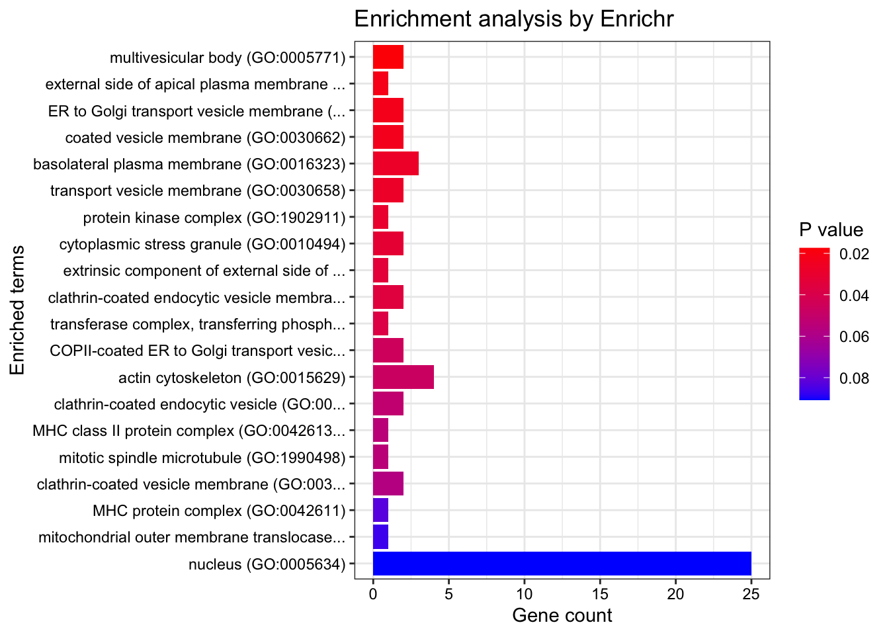
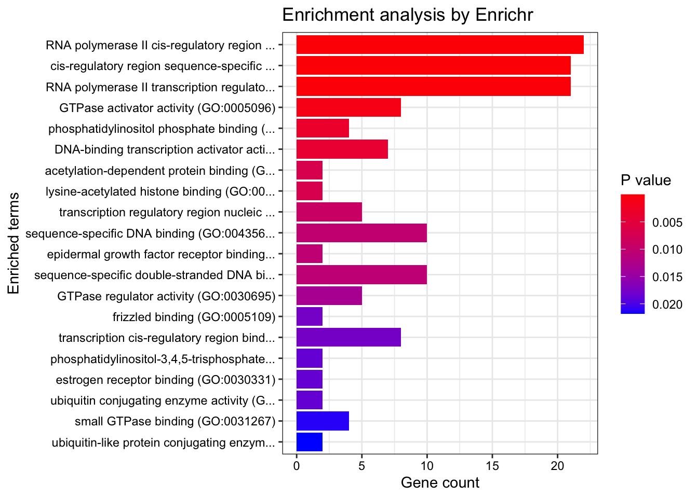

Prostate Cancer ~ Predictdb eQTL&sQTL (Prostate,Testis,Lymphocytes) & RefZ prostate cohort & TCGA prostate tumor cohort
Nina Yifan Yang
2024-11-03
Last updated: 2024-11-03
Checks: 7 0
Knit directory: Multigroup_cTWAS/
This reproducible R Markdown analysis was created with workflowr (version 1.7.1). The Checks tab describes the reproducibility checks that were applied when the results were created. The Past versions tab lists the development history.
Great! Since the R Markdown file has been committed to the Git repository, you know the exact version of the code that produced these results.
Great job! The global environment was empty. Objects defined in the global environment can affect the analysis in your R Markdown file in unknown ways. For reproduciblity it’s best to always run the code in an empty environment.
The command set.seed(20241004) was run prior to running
the code in the R Markdown file. Setting a seed ensures that any results
that rely on randomness, e.g. subsampling or permutations, are
reproducible.
Great job! Recording the operating system, R version, and package versions is critical for reproducibility.
Nice! There were no cached chunks for this analysis, so you can be confident that you successfully produced the results during this run.
Great job! Using relative paths to the files within your workflowr project makes it easier to run your code on other machines.
Great! You are using Git for version control. Tracking code development and connecting the code version to the results is critical for reproducibility.
The results in this page were generated with repository version 6c7cf9d. See the Past versions tab to see a history of the changes made to the R Markdown and HTML files.
Note that you need to be careful to ensure that all relevant files for
the analysis have been committed to Git prior to generating the results
(you can use wflow_publish or
wflow_git_commit). workflowr only checks the R Markdown
file, but you know if there are other scripts or data files that it
depends on. Below is the status of the Git repository when the results
were generated:
Ignored files:
Ignored: .DS_Store
Ignored: .Rhistory
Ignored: analysis/.DS_Store
Ignored: analysis/.Rhistory
Note that any generated files, e.g. HTML, png, CSS, etc., are not included in this status report because it is ok for generated content to have uncommitted changes.
These are the previous versions of the repository in which changes were
made to the R Markdown
(analysis/cTWAS_LD_european_combined3_output.Rmd) and HTML
(docs/cTWAS_LD_european_combined3_output.html) files. If
you’ve configured a remote Git repository (see
?wflow_git_remote), click on the hyperlinks in the table
below to view the files as they were in that past version.
| File | Version | Author | Date | Message |
|---|---|---|---|---|
| Rmd | 6c7cf9d | yy896 | 2024-11-03 | UPDATED RESULTS |
| html | 075e972 | yy896 | 2024-10-31 | Build site. |
| Rmd | 4c2b617 | yy896 | 2024-10-31 | UPDATED RESULTS |
| html | 099102d | yy896 | 2024-10-30 | Build site. |
| Rmd | 80c4792 | yy896 | 2024-10-30 | UPDATED RESULTS |
Here presenting a cTWAS results report based on real data analysis. The analyzed trait is prostate cancer, the prediction models are Prostate & Testis & Lymphocytes gene expression and splicing models trained on GTEx v8 in the PredictDB format, and RefZ FUSION weights expression data under NIH accession number phs000985.v2.p1, and TCGA FUSION weights expression data derived from mRNA-seq.
Analysis Settings
Input Data
- GWAS Z-scores
The summary statistics for prostate cancer are downloaded from https://www.ebi.ac.uk/gwas/downloads/summary-statistics, using dataset ID: GCST90274714.
The sample size is
[1] "gwas_n = 726828"- Prediction models
The prediction models used in this analysis are prostate & testis & lymphocytes gene expression and splicing models, trained on GTEx v8 in the PredictDB format. These models can be downloaded from https://predictdb.org/post/2021/07/21/gtex-v8-models-on-eqtl-and-sqtl/. The RefZ weights model can be downloaded from https://www.ncbi.nlm.nih.gov/projects/gap/cgi-bin/study.cgi?study_id=phs000985.v2.p1. The TCGA weights model can be found here. http://gusevlab.org/projects/fusion/
- Reference data
We did include ukb38 whole genome LD reference in the analysis.
Data processing and harmonization
We map the reference SNPs to regions following the instructions from the cTWAS tutorial.
When processing z-scores, we exclude multi-allelic and
strand-ambiguous variants by setting
drop_multiallelic = TRUE and
drop_strand_ambig = TRUE.
The process can be divided into steps below, users can expand the code snippets below to view the exact code used.
- Input and output settings
weight_files <- c("/project2/xinhe/shared_data/multigroup_ctwas/weights/expression_models/expression_Prostate.db",
"/project2/xinhe/shared_data/multigroup_ctwas/weights/splicing_models/splicing_Prostate.db",
"/project2/xinhe/shared_data/multigroup_ctwas/weights/expression_models/expression_Testis.db",
"/project2/xinhe/shared_data/multigroup_ctwas/weights/splicing_models/splicing_Testis.db",
"/project2/xinhe/shared_data/multigroup_ctwas/weights/expression_models/expression_Cells_EBV-transformed_lymphocytes.db",
"/project2/xinhe/shared_data/multigroup_ctwas/weights/splicing_models/splicing_Cells_EBV-transformed_lymphocytes.db")
z_snp <- vroom::vroom("/project2/xinhe/yifany/GCST90274714.mod.tsv.gz", col_names = TRUE, show_col_types = FALSE)
z_snp$Z <- z_snp$beta / z_snp$standard_error
# gwas_n <- as.numeric(names(sort(table(z_snp$base_pair_location), decreasing = TRUE)[1]))
# cat("gwas_n =", gwas_n, "\n")
gwas_n <- 726828
z_snp <- z_snp[, c("rsid", "other_allele", "effect_allele", "Z")]
colnames(z_snp) <- c("id", "A1", "A2", "z")
region_file <- system.file("extdata/ldetect", "EUR.b38.ldetect.regions.RDS", package = "ctwas")
region_info <- readRDS(region_file)
# output dir
outputdir <- "/project/xinhe/yifany/multigroup_cTWAS"
dir.create(outputdir, showWarnings=F, recursive=T)
# Number of cores
ncore <- 5- Preprocessing GWAS
### Preprocess SNP_map and LD_map
genome_version <- "b38"
region_file <- system.file("extdata/ldetect", paste0("EUR.", genome_version, ".ldetect.regions.RDS"), package = "ctwas")
region_info <- readRDS(region_file)
LD_dir <- "/project2/mstephens/wcrouse/UKB_LDR_0.1"
LD_filestem <- sprintf("ukb_%s_0.1_chr%s.R_snp.%s_%s", genome_version, region_info$chrom, region_info$start, region_info$stop)
region_metatable <- region_info
region_metatable$LD_file <- file.path(LD_dir, paste0(LD_filestem, ".RDS"))
region_metatable$SNP_file <- file.path(LD_dir, paste0(LD_filestem, ".Rvar"))
res <- create_snp_LD_map(region_metatable)
region_info <- res$region_info
snp_map <- res$snp_map
LD_map <- res$LD_map
z_snp <- preprocess_z_snp(z_snp, snp_map,
drop_multiallelic = TRUE,
drop_strand_ambig = TRUE)- Preprocessing weights
weights_prostate_expression <- preprocess_weights(weight_files[1],
region_info,
gwas_snp_ids = z_snp$id,
snp_map = snp_map,
type = "eQTL",
context = "prostate",
weight_format = "PredictDB",
drop_strand_ambig = TRUE,
scale_predictdb_weights = TRUE,
load_predictdb_LD = TRUE,
filter_protein_coding_genes = TRUE,
ncore = 5)
weights_prostate_splicing <- preprocess_weights(weight_files[2],
region_info,
gwas_snp_ids = z_snp$id,
snp_map = snp_map,
type = "sQTL",
context = "prostate",
weight_format = "PredictDB",
drop_strand_ambig = TRUE,
scale_predictdb_weights = TRUE,
load_predictdb_LD = TRUE,
filter_protein_coding_genes = TRUE,
ncore = 5)
weights_testis_expression <- preprocess_weights(weight_files[3],
region_info,
gwas_snp_ids = z_snp$id,
snp_map = snp_map,
type = "eQTL",
context = "testis",
weight_format = "PredictDB",
drop_strand_ambig = TRUE,
scale_predictdb_weights = TRUE,
load_predictdb_LD = TRUE,
filter_protein_coding_genes = TRUE,
ncore = 5)
weights_testis_splicing <- preprocess_weights(weight_files[4],
region_info,
gwas_snp_ids = z_snp$id,
snp_map = snp_map,
type = "sQTL",
context = "testis",
weight_format = "PredictDB",
drop_strand_ambig = TRUE,
scale_predictdb_weights = TRUE,
load_predictdb_LD = TRUE,
filter_protein_coding_genes = TRUE,
ncore = 5)
weights_lymphocytes_expression <- preprocess_weights(weight_files[5],
region_info,
gwas_snp_ids = z_snp$id,
snp_map = snp_map,
type = "eQTL",
context = "lymphocytes",
weight_format = "PredictDB",
drop_strand_ambig = TRUE,
scale_predictdb_weights = TRUE,
load_predictdb_LD = TRUE,
filter_protein_coding_genes = TRUE,
ncore = 5)
weights_lymphocytes_splicing <- preprocess_weights(weight_files[6],
region_info,
gwas_snp_ids = z_snp$id,
snp_map = snp_map,
type = "sQTL",
context = "lymphocytes",
weight_format = "PredictDB",
drop_strand_ambig = TRUE,
scale_predictdb_weights = TRUE,
load_predictdb_LD = TRUE,
filter_protein_coding_genes = TRUE,
ncore = 5)
weights_RefZ_prostate <- preprocess_weights("/project2/xinhe/yifany/RefZ_prostate/weights",
region_info,
gwas_snp_ids = z_snp$id,
snp_map = snp_map,
LD_map = LD_map,
type = "RefZ",
context = "prostate",
weight_format = "FUSION",
fusion_method = "lasso",
fusion_genome_version = "b38",
top_n_snps = NULL,
drop_strand_ambig = TRUE,
filter_protein_coding_genes = FALSE,
scale_predictdb_weights = FALSE,
load_predictdb_LD = FALSE,
ncore = 5)
weights_TCGA_prostate <- preprocess_weights("/project2/xinhe/yifany/TCGA_prostate/TCGA-PRAD.TUMOR",
region_info,
gwas_snp_ids = z_snp$id,
snp_map = snp_map,
LD_map = LD_map,
type = "TCGA",
context = "prostate",
weight_format = "FUSION",
fusion_method = "lasso",
fusion_genome_version = "b38",
top_n_snps = NULL,
drop_strand_ambig = TRUE,
filter_protein_coding_genes = FALSE,
scale_predictdb_weights = FALSE,
load_predictdb_LD = FALSE,
ncore = 5)
weights <- c(
weights_prostate_expression,
weights_prostate_splicing,
weights_testis_expression,
weights_testis_splicing,
weights_lymphocytes_expression,
weights_lymphocytes_splicing,
weights_RefZ_prostate,
weights_TCGA_prostate)Running cTWAS analysis
We use the ctwas main function ctwas_sumstats to run the
cTWAS analysis with LD. For more details on this function, refer to the
cTWAS tutorial: https://xinhe-lab.github.io/multigroup_ctwas/articles/running_ctwas_analysis.html
Users can expand the code snippets below to view the exact code used.
ctwas_res <- ctwas_sumstats_noLD(z_snp,
weights,
region_info,
snp_map,
thin = 0.1,
ncore = 5)Parameter estimation
ctwas_res is the object contains the outputs of
cTWAS
We extract the estimated parameters by
param <- ctwas_res$param
We make plots using the function
make_convergence_plots(param, gwas_n) to see how estimated
parameters converge during the execution of the program:

| Version | Author | Date |
|---|---|---|
| 099102d | yy896 | 2024-10-30 |
These plots show the estimated prior inclusion probability, prior effect size variance, enrichment and proportion of variance explained (PVE) over the iterations of parameter estimation. The enrichment is defined as the ratio of the prior inclusion probability of molecular traits over the prior inclusion probability of variants. We generally expect molecular traits to have higher prior inclusion probability than variants. Enrichment values typically range from 20 - 100 for expression traits.
Then, we use summarize_param(param, gwas_n) to obtain
estimated parameters (from the last iteration) and to compute the PVE by
variants and molecular traits.
[1] "The number of genes/introns/SNPs used in the analysis is:" prostate|eQTL prostate|sQTL testis|eQTL testis|sQTL
9693 27939 11361 41889
lymphocytes|eQTL lymphocytes|sQTL prostate|RefZ prostate|TCGA
8478 24989 12731 4650
SNP
6646020 ctwas_parameters$prop_heritability contains the
proportion of heritability mediated by molecular traits and variants, we
visualize it using pie chart.
ctwas_parameters <- summarize_param(param, gwas_n)
data <- data.frame(
category = names(ctwas_parameters$prop_heritability),
percentage = ctwas_parameters$prop_heritability
)
# Calculate percentage labels for the chart
data$percentage_label <- paste0(round(data$percentage * 100), "%")
ggplot(data, aes(x = "", y = percentage, fill = category)) +
geom_bar(stat = "identity", width = 1) +
coord_polar("y", start = 0) +
theme_void() + # Remove background and axes
geom_text(aes(label = percentage_label),
position = position_stack(vjust = 0.5)) +
scale_fill_brewer(palette = "Pastel1") +
labs(fill = "Category") +
ggtitle("Percent of heritability")
Diagnosis plots
For all genes analyzed, we compare the z-scores and fine-mapping PIPs”
ggplot(data = finemap_res[finemap_res$type!="SNP",], aes(x = abs(z), y = susie_pip)) +
geom_point() +
labs(x = "abs(z-scores)", y = "PIPs") +
theme_minimal()
| Version | Author | Date |
|---|---|---|
| 099102d | yy896 | 2024-10-30 |
Fine-mapping results
We process the fine-mapping results here.
We first add gene annotations to cTWAS results.
mapping_table is a combination of eQTL, sQTL, RefZ
expression and TCGA expression data.
finemap_res <- anno_finemap_res(finemap_res,
snp_map = snp_map,
mapping_table = mapping_table,
add_gene_annot = TRUE,
map_by = "molecular_id",
drop_unmapped = TRUE,
add_position = TRUE,
use_gene_pos = "mid")The annotated fine-mapping results, ones within credible sets are shown
finemap_res_show <- subset(finemap_res, group != "SNP" & gene_type == "protein_coding" & susie_pip > 0.8 & !is.na(cs))
DT::datatable(finemap_res_show,caption = htmltools::tags$caption( style = 'caption-side: topleft; text-align = left; color:black;','The annotated fine-mapping results, ones within credible sets are shown'),options = list(pageLength = 5) )Next, we compute gene combined-PIPs across different types of molecular traits, where only genes within credible sets are shown.
susie_alpha_res <- anno_susie_alpha_res(susie_alpha_res,
mapping_table = mapping_table,
map_by = "molecular_id",
drop_unmapped = TRUE)combined_pip_by_group <- combine_gene_pips(susie_alpha_res,
group_by = "gene_name",
by = "group",
method = "combine_cs",
filter_cs = TRUE,
include_cs_id = TRUE)
combined_pip_by_group$sQTL_pip_partition <- sapply(combined_pip_by_group$gene_name, function(gene) {
# Find rows in finemap_res_show matching the gene_name
matching_rows <- finemap_res_show %>%
dplyr::filter(gene_name == gene, type == "sQTL") # Match gene_name and filter by type == "sQTL"
# If no matching rows, return NA
if (nrow(matching_rows) == 0) {
return(NA)
}
# Create the desired string format: molecular_id-round(susie_pip, digits = 4)
paste(matching_rows$molecular_id, ":PIP=", round(matching_rows$susie_pip, digits = 4), sep = "", collapse = ", ")
})
combined_pip_table <- subset(combined_pip_by_group, combined_pip > 0.8)
DT::datatable(combined_pip_table, caption = htmltools::tags$caption(
style = 'caption-side: topleft; text-align = left; color:black;',
'Gene PIPs, only genes within credible sets are shown'),
options = list(pageLength = 5))Locus plots (ONLY showing top 10 here)
make_locusplot(finemap_res,
region_id = "20_34225635_36332043",
ens_db = ens_db,
weights = weights,
highlight_pip = 0.8,
filter_protein_coding_genes = TRUE,
filter_cs = TRUE,
color_pval_by = "cs",
color_pip_by = "cs")2024-11-03 13:54:10.484952 INFO::Limit to protein coding genes
2024-11-03 13:54:10.489316 INFO::focal id: ENSG00000126001.15|testis_eQTL
2024-11-03 13:54:10.493374 INFO::focal molecular trait: CEP250 testis eQTL
2024-11-03 13:54:10.493646 INFO::Range of locus: chr20:34225783-36331600chromosome 20, position 34225783 to 363316003896 SNPs/datapoints2024-11-03 13:54:10.759109 INFO::focal molecular trait QTL positions: 35445740,35454222,35456125
2024-11-03 13:54:10.775387 INFO::Limit PIPs to credible setsWarning: ggrepel: 458 unlabeled data points (too many overlaps). Consider
increasing max.overlaps
| Version | Author | Date |
|---|---|---|
| 099102d | yy896 | 2024-10-30 |
make_locusplot(finemap_res,
region_id = "3_85533081_87360582",
ens_db = ens_db,
weights = weights,
highlight_pip = 0.8,
filter_protein_coding_genes = TRUE,
filter_cs = TRUE,
color_pval_by = "cs",
color_pip_by = "cs")2024-11-03 13:54:11.8094 INFO::Limit to protein coding genes
2024-11-03 13:54:11.81 INFO::focal id: CHMP2B|prostate_RefZ
2024-11-03 13:54:11.810271 INFO::focal molecular trait: CHMP2B prostate RefZ
2024-11-03 13:54:11.810539 INFO::Range of locus: chr3:85532981-87360172chromosome 3, position 85532981 to 873601724787 SNPs/datapoints2024-11-03 13:54:11.930319 INFO::focal molecular trait QTL positions: 87122674,87149239,87149381,87155929,87159999,87160086,87172220,87214347,87235251,87246499,87252295
2024-11-03 13:54:11.944524 INFO::Limit PIPs to credible setsWarning: ggrepel: 7 unlabeled data points (too many overlaps). Consider
increasing max.overlapsWarning: ggrepel: 11 unlabeled data points (too many overlaps). Consider
increasing max.overlaps
| Version | Author | Date |
|---|---|---|
| 099102d | yy896 | 2024-10-30 |
make_locusplot(finemap_res,
region_id = "2_240620667_241210506",
ens_db = ens_db,
weights = weights,
highlight_pip = 0.8,
filter_protein_coding_genes = TRUE,
filter_cs = TRUE,
color_pval_by = "cs",
color_pip_by = "cs")2024-11-03 13:54:12.622044 INFO::Limit to protein coding genes
2024-11-03 13:54:12.622624 INFO::focal id: intron_2_241195845_241199316|prostate_sQTL
2024-11-03 13:54:12.622874 INFO::focal molecular trait: ANO7 prostate sQTL
2024-11-03 13:54:12.623102 INFO::Range of locus: chr2:240618245-241608572chromosome 2, position 240618245 to 2416085722092 SNPs/datapoints2024-11-03 13:54:12.730194 INFO::focal molecular trait QTL positions: 241195850,241202304
2024-11-03 13:54:12.743983 INFO::Limit PIPs to credible setsWarning: ggrepel: 133 unlabeled data points (too many overlaps). Consider
increasing max.overlaps
| Version | Author | Date |
|---|---|---|
| 099102d | yy896 | 2024-10-30 |
make_locusplot(finemap_res,
region_id = "11_101460390_104088908",
ens_db = ens_db,
weights = weights,
highlight_pip = 0.8,
filter_protein_coding_genes = TRUE,
filter_cs = TRUE,
color_pval_by = "cs",
color_pip_by = "cs")2024-11-03 13:54:13.355854 INFO::Limit to protein coding genes
2024-11-03 13:54:13.356567 INFO::focal id: MMP7|prostate_TCGA
2024-11-03 13:54:13.356899 INFO::focal molecular trait: MMP7,MMP7 prostate,prostate TCGA,TCGA
2024-11-03 13:54:13.357211 INFO::Range of locus: chr11:101460301-104087928chromosome 11, position 101460301 to 1040879288434 SNPs/datapoints2024-11-03 13:54:13.646554 INFO::focal molecular trait QTL positions: 102474543,102518756,102530930,102536460,102553159,102553897,102557982,102559377,102573296,102573400,102577525,102579220
2024-11-03 13:54:13.659889 INFO::Limit PIPs to credible setsWarning: ggrepel: 80 unlabeled data points (too many overlaps). Consider
increasing max.overlapsWarning: ggrepel: 12 unlabeled data points (too many overlaps). Consider
increasing max.overlaps
| Version | Author | Date |
|---|---|---|
| 099102d | yy896 | 2024-10-30 |
make_locusplot(finemap_res,
region_id = "7_97470258_99117851",
ens_db = ens_db,
weights = weights,
highlight_pip = 0.8,
filter_protein_coding_genes = TRUE,
filter_cs = TRUE,
color_pval_by = "cs",
color_pip_by = "cs")2024-11-03 13:54:14.254081 INFO::Limit to protein coding genes
2024-11-03 13:54:14.255366 INFO::focal id: BHLHA15|prostate_RefZ
2024-11-03 13:54:14.255682 INFO::focal molecular trait: BHLHA15,BHLHA15 prostate,prostate RefZ,RefZ
2024-11-03 13:54:14.255949 INFO::Range of locus: chr7:97470327-99117511chromosome 7, position 97470327 to 991175114641 SNPs/datapoints2024-11-03 13:54:14.330652 INFO::focal molecular trait QTL positions: 97925967,98028065,98028141,98046947,98144500,98145547,98149264,98154749,98156188,98156970,98160039,98320338,98349597,98391265,98490538
2024-11-03 13:54:14.344255 INFO::Limit PIPs to credible setsWarning: ggrepel: 92 unlabeled data points (too many overlaps). Consider
increasing max.overlapsWarning: ggrepel: 8 unlabeled data points (too many overlaps). Consider
increasing max.overlaps
| Version | Author | Date |
|---|---|---|
| 099102d | yy896 | 2024-10-30 |
make_locusplot(finemap_res,
region_id = "19_16263605_18299052",
ens_db = ens_db,
weights = weights,
highlight_pip = 0.8,
filter_protein_coding_genes = TRUE,
filter_cs = TRUE,
color_pval_by = "cs",
color_pip_by = "cs")2024-11-03 13:54:15.130492 INFO::Limit to protein coding genes
2024-11-03 13:54:15.131835 INFO::focal id: MYO9B|prostate_RefZ
2024-11-03 13:54:15.13215 INFO::focal molecular trait: MYO9B,MYO9B prostate,prostate RefZ,RefZ
2024-11-03 13:54:15.132423 INFO::Range of locus: chr19:16263732-18298377chromosome 19, position 16263732 to 182983776504 SNPs/datapoints2024-11-03 13:54:15.237553 INFO::focal molecular trait QTL positions: 16744454,17030435,17096346,17097041,17099048,17100758,17101372,17101600,17104392,17108295,17117744,17118629,17118822,17415324,17537541,17554084,17554444,17649423
2024-11-03 13:54:15.250853 INFO::Limit PIPs to credible setsWarning: ggrepel: 516 unlabeled data points (too many overlaps). Consider
increasing max.overlapsWarning: ggrepel: 12 unlabeled data points (too many overlaps). Consider
increasing max.overlaps
| Version | Author | Date |
|---|---|---|
| 099102d | yy896 | 2024-10-30 |
make_locusplot(finemap_res,
region_id = "11_124625632_126441425",
ens_db = ens_db,
weights = weights,
highlight_pip = 0.8,
filter_protein_coding_genes = TRUE,
filter_cs = TRUE,
color_pval_by = "cs",
color_pip_by = "cs")2024-11-03 13:54:16.572134 INFO::Limit to protein coding genes
2024-11-03 13:54:16.573295 INFO::focal id: PKNOX2|prostate_RefZ
2024-11-03 13:54:16.573568 INFO::focal molecular trait: PKNOX2 prostate RefZ
2024-11-03 13:54:16.573834 INFO::Range of locus: chr11:124627414-126441118chromosome 11, position 124627414 to 1264411185331 SNPs/datapoints2024-11-03 13:54:16.648119 INFO::focal molecular trait QTL positions: 125184897,125274530
2024-11-03 13:54:16.661113 INFO::Limit PIPs to credible setsWarning: ggrepel: 345 unlabeled data points (too many overlaps). Consider
increasing max.overlaps
| Version | Author | Date |
|---|---|---|
| 099102d | yy896 | 2024-10-30 |
make_locusplot(finemap_res,
region_id = "2_19492643_20850730",
ens_db = ens_db,
weights = weights,
highlight_pip = 0.8,
filter_protein_coding_genes = TRUE,
filter_cs = TRUE,
color_pval_by = "cs",
color_pip_by = "cs")2024-11-03 13:54:17.866917 INFO::Limit to protein coding genes
2024-11-03 13:54:17.867525 INFO::focal id: GDF7|prostate_RefZ
2024-11-03 13:54:17.867778 INFO::focal molecular trait: GDF7 prostate RefZ
2024-11-03 13:54:17.868024 INFO::Range of locus: chr2:19352676-20849469chromosome 2, position 19352676 to 208494694125 SNPs/datapoints2024-11-03 13:54:17.963925 INFO::focal molecular trait QTL positions: 20241617,20677676,20678345,20678393,20681073
2024-11-03 13:54:17.977211 INFO::Limit PIPs to credible setsWarning: ggrepel: 82 unlabeled data points (too many overlaps). Consider
increasing max.overlaps
| Version | Author | Date |
|---|---|---|
| 099102d | yy896 | 2024-10-30 |
make_locusplot(finemap_res,
region_id = "12_113548904_114598797",
ens_db = ens_db,
weights = weights,
highlight_pip = 0.8,
filter_protein_coding_genes = TRUE,
filter_cs = TRUE,
color_pval_by = "cs",
color_pip_by = "cs")2024-11-03 13:54:18.555406 INFO::Limit to protein coding genes
2024-11-03 13:54:18.556038 INFO::focal id: TBX5|prostate_RefZ
2024-11-03 13:54:18.55632 INFO::focal molecular trait: TBX5 prostate RefZ
2024-11-03 13:54:18.556599 INFO::Range of locus: chr12:113550218-114597138chromosome 12, position 113550218 to 1145971383483 SNPs/datapoints2024-11-03 13:54:18.624949 INFO::focal molecular trait QTL positions: 114070107,114247766
2024-11-03 13:54:18.639712 INFO::Limit PIPs to credible setsWarning: ggrepel: 31 unlabeled data points (too many overlaps). Consider
increasing max.overlaps
| Version | Author | Date |
|---|---|---|
| 099102d | yy896 | 2024-10-30 |
make_locusplot(finemap_res,
region_id = "1_85989068_87662948",
ens_db = ens_db,
weights = weights,
highlight_pip = 0.8,
filter_protein_coding_genes = TRUE,
filter_cs = TRUE,
color_pval_by = "cs",
color_pip_by = "cs")2024-11-03 13:54:19.299301 INFO::Limit to protein coding genes
2024-11-03 13:54:19.300422 INFO::focal id: LOC339524|prostate_TCGA
2024-11-03 13:54:19.30073 INFO::focal molecular trait: LOC339524,LOC339524 prostate,prostate TCGA,TCGA
2024-11-03 13:54:19.300982 INFO::Range of locus: chr1:85942988-87662356chromosome 1, position 85942988 to 876623564622 SNPs/datapoints2024-11-03 13:54:19.397865 INFO::focal molecular trait QTL positions: 87118956,87134014,87148492
2024-11-03 13:54:19.411571 INFO::Limit PIPs to credible setsWarning: ggrepel: 87 unlabeled data points (too many overlaps). Consider
increasing max.overlapsWarning: ggrepel: 92 unlabeled data points (too many overlaps). Consider
increasing max.overlaps
| Version | Author | Date |
|---|---|---|
| 099102d | yy896 | 2024-10-30 |
GSEA-Gene Ontology
dbs <- c("GO_Biological_Process_2021", "GO_Cellular_Component_2021", "GO_Molecular_Function_2021")
genes <- combined_pip_by_group$gene_name[combined_pip_by_group$combined_pip >0.8]
#number of genes for gene set enrichment
sprintf("The number of genes used in enrichment analysis = %s", length(genes))[1] "The number of genes used in enrichment analysis = 86"GO_enrichment <- enrichr(genes, dbs)Uploading data to Enrichr... Done.
Querying GO_Biological_Process_2021... Done.
Querying GO_Cellular_Component_2021... Done.
Querying GO_Molecular_Function_2021... Done.
Parsing results... Done.print("GO_Biological_Process_2021")[1] "GO_Biological_Process_2021"db <- "GO_Biological_Process_2021"
df <- GO_enrichment[[db]]
print(plotEnrich(GO_enrichment[[db]]))
| Version | Author | Date |
|---|---|---|
| 099102d | yy896 | 2024-10-30 |
df <- df[df$Adjusted.P.value<0.05,c("Term", "Overlap", "Adjusted.P.value", "Genes")]
DT::datatable(df,caption = htmltools::tags$caption( style = 'caption-side: topleft; text-align = left; color:black;','Enriched pathways from GO_Biological_Process_2021'),options = list(pageLength = 5) )print("GO_Cellular_Component_2021")[1] "GO_Cellular_Component_2021"db <- "GO_Cellular_Component_2021"
df <- GO_enrichment[[db]]
print(plotEnrich(GO_enrichment[[db]]))
| Version | Author | Date |
|---|---|---|
| 099102d | yy896 | 2024-10-30 |
df <- df[df$Adjusted.P.value<0.05,c("Term", "Overlap", "Adjusted.P.value", "Genes")]
DT::datatable(df,caption = htmltools::tags$caption( style = 'caption-side: topleft; text-align = left; color:black;','Enriched pathways from GO_Cellular_Component_2021'),options = list(pageLength = 5) )print("GO_Molecular_Function_2021")[1] "GO_Molecular_Function_2021"db <- "GO_Molecular_Function_2021"
df <- GO_enrichment[[db]]
print(plotEnrich(GO_enrichment[[db]]))
| Version | Author | Date |
|---|---|---|
| 099102d | yy896 | 2024-10-30 |
df <- df[df$Adjusted.P.value<0.05,c("Term", "Overlap", "Adjusted.P.value", "Genes")]
DT::datatable(df,caption = htmltools::tags$caption( style = 'caption-side: topleft; text-align = left; color:black;','Enriched pathways from GO_Molecular_Function_2021'),options = list(pageLength = 5) )
sessionInfo()R version 4.4.1 (2024-06-14)
Platform: aarch64-apple-darwin20
Running under: macOS 15.1
Matrix products: default
BLAS: /Library/Frameworks/R.framework/Versions/4.4-arm64/Resources/lib/libRblas.0.dylib
LAPACK: /Library/Frameworks/R.framework/Versions/4.4-arm64/Resources/lib/libRlapack.dylib; LAPACK version 3.12.0
locale:
[1] en_US.UTF-8/en_US.UTF-8/en_US.UTF-8/C/en_US.UTF-8/en_US.UTF-8
time zone: America/New_York
tzcode source: internal
attached base packages:
[1] stats4 stats graphics grDevices utils datasets methods
[8] base
other attached packages:
[1] biomaRt_2.60.1 karyoploteR_1.30.0
[3] regioneR_1.36.0 htmltools_0.5.8.1
[5] DT_0.33 enrichR_3.2
[7] EnsDb.Hsapiens.v86_2.99.0 ensembldb_2.28.1
[9] AnnotationFilter_1.28.0 GenomicFeatures_1.56.0
[11] AnnotationDbi_1.66.0 Biobase_2.64.0
[13] GenomicRanges_1.56.2 GenomeInfoDb_1.40.1
[15] IRanges_2.38.1 S4Vectors_0.42.1
[17] BiocGenerics_0.50.0 ctwas_0.4.18
[19] data.table_1.16.2 lubridate_1.9.3
[21] forcats_1.0.0 stringr_1.5.1
[23] dplyr_1.1.4 purrr_1.0.2
[25] readr_2.1.5 tidyr_1.3.1
[27] tibble_3.2.1 ggplot2_3.5.1
[29] tidyverse_2.0.0
loaded via a namespace (and not attached):
[1] later_1.3.2 BiocIO_1.14.0
[3] bitops_1.0-9 filelock_1.0.3
[5] XML_3.99-0.17 rpart_4.1.23
[7] lifecycle_1.0.4 httr2_1.0.5
[9] mixsqp_0.3-54 rprojroot_2.0.4
[11] lattice_0.22-6 crosstalk_1.2.1
[13] backports_1.5.0 magrittr_2.0.3
[15] locuszoomr_0.3.5 Hmisc_5.2-0
[17] plotly_4.10.4 sass_0.4.9
[19] rmarkdown_2.28 jquerylib_0.1.4
[21] yaml_2.3.10 httpuv_1.6.15
[23] cowplot_1.1.3 DBI_1.2.3
[25] RColorBrewer_1.1-3 abind_1.4-8
[27] zlibbioc_1.50.0 pgenlibr_0.3.7
[29] biovizBase_1.52.0 RCurl_1.98-1.16
[31] nnet_7.3-19 WriteXLS_6.7.0
[33] VariantAnnotation_1.50.0 rappdirs_0.3.3
[35] git2r_0.35.0 GenomeInfoDbData_1.2.12
[37] ggrepel_0.9.6 irlba_2.3.5.1
[39] codetools_0.2-20 DelayedArray_0.30.1
[41] xml2_1.3.6 tidyselect_1.2.1
[43] UCSC.utils_1.0.0 farver_2.1.2
[45] matrixStats_1.4.1 BiocFileCache_2.12.0
[47] base64enc_0.1-3 bamsignals_1.36.0
[49] GenomicAlignments_1.40.0 jsonlite_1.8.9
[51] Formula_1.2-5 tools_4.4.1
[53] progress_1.2.3 Rcpp_1.0.13
[55] glue_1.8.0 gridExtra_2.3
[57] SparseArray_1.4.8 xfun_0.48
[59] MatrixGenerics_1.16.0 withr_3.0.2
[61] fastmap_1.2.0 LDlinkR_1.4.0
[63] fansi_1.0.6 digest_0.6.37
[65] timechange_0.3.0 R6_2.5.1
[67] colorspace_2.1-1 dichromat_2.0-0.1
[69] RSQLite_2.3.7 utf8_1.2.4
[71] generics_0.1.3 rtracklayer_1.64.0
[73] prettyunits_1.2.0 httr_1.4.7
[75] htmlwidgets_1.6.4 S4Arrays_1.4.1
[77] whisker_0.4.1 pkgconfig_2.0.3
[79] gtable_0.3.6 blob_1.2.4
[81] workflowr_1.7.1 XVector_0.44.0
[83] gggrid_0.2-0 ProtGenerics_1.36.0
[85] scales_1.3.0 logging_0.10-108
[87] png_0.1-8 knitr_1.48
[89] rstudioapi_0.17.1 tzdb_0.4.0
[91] rjson_0.2.23 checkmate_2.3.2
[93] curl_5.2.3 cachem_1.1.0
[95] zoo_1.8-12 parallel_4.4.1
[97] foreign_0.8-87 restfulr_0.0.15
[99] pillar_1.9.0 grid_4.4.1
[101] vctrs_0.6.5 promises_1.3.0
[103] dbplyr_2.5.0 cluster_2.1.6
[105] htmlTable_2.4.3 evaluate_1.0.1
[107] cli_3.6.3 compiler_4.4.1
[109] bezier_1.1.2 Rsamtools_2.20.0
[111] rlang_1.1.4 crayon_1.5.3
[113] labeling_0.4.3 fs_1.6.5
[115] stringi_1.8.4 viridisLite_0.4.2
[117] BiocParallel_1.38.0 munsell_0.5.1
[119] Biostrings_2.72.1 lazyeval_0.2.2
[121] Matrix_1.7-1 BSgenome_1.72.0
[123] hms_1.1.3 bit64_4.5.2
[125] KEGGREST_1.44.1 SummarizedExperiment_1.34.0
[127] highr_0.11 memoise_2.0.1
[129] bslib_0.8.0 bit_4.5.0